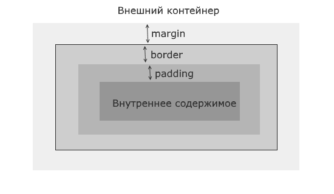
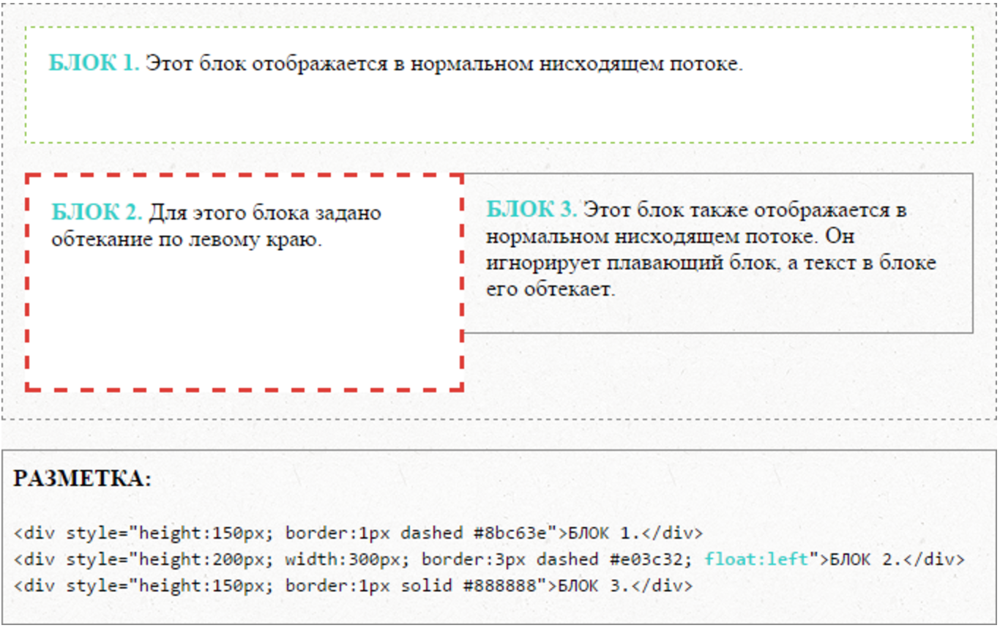
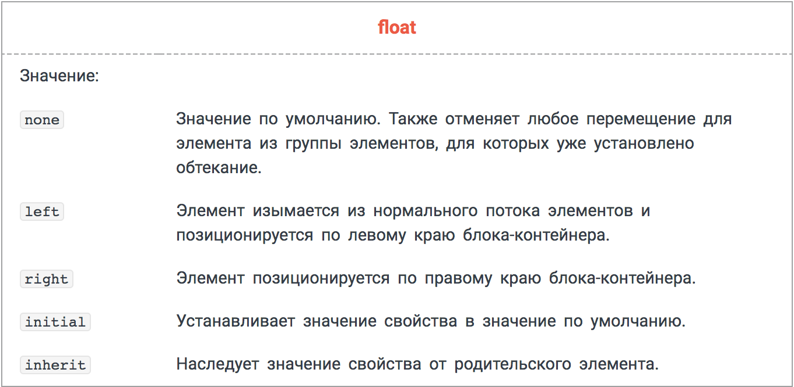
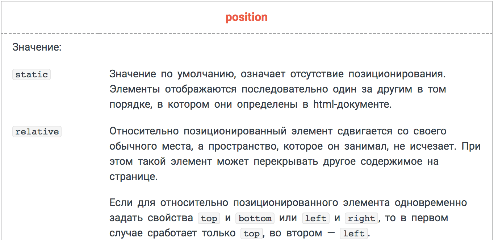

лекция #2
Основы CSS. Git / Github.
Короткое содержание
- Что такое CSS?
- Интеграция стилей на страницу
- Простые и комплексные селекторы
- Псевдоэлементы
- Блочные и строчные элементы
- Позиционирование
- Github?
CSS
Cascading Style Sheets - Каскадные таблицы стилей
- Что?
- Зачем?
Язык стилей который определяет как будет выглядеть HTML документ.
Интерактивность, UI/UX.
Варианты подключения стилей
- атрибут style к элементу
<p style="color: #a4a4a4">Gray text</p>
<head>
...
<style>
p {
color: #a4a4a4;
}
</style>
...
</head>
Простые селекторы
Селектор - семантический элемент CSS, идентификатор элемента или группы элементов.
селектор {
правило: значение;
}
Селектором может быть:
- имя тега
- класс
- идентификатор
Каскад
В CSS все стили идут каскадом сверху вниз, что позволяет добавлять другой стиль или переписывать его.
селектор {
правило: значение;
}
селектор {
правило: другое-значение;
}
Простые селекторы
Если в качестве селектора используется имя тега, то в таком случае все элементы на странице данного тега будут следовать этому набору правил. Если же в этих элементах есть вложенные текстовые элементы, то они будут наследовать определенные правила.
p {
font-weight: bold;
font-size: 24px;
color: red;
}
Простые селекторы
Класс элемента (атрибут class), позволяет применять стили для сразу нескольких элементов
.square {
height: 200px;
width: 200px;
}
<div class="square">Content 1</div>
<div class="square">Content 2</div>
Простые селекторы
Идентификатор элемента (атрибут id), по сколько на странице может быть только один уникальный идентификатор, значит стили будут применены только к одному элементу
#square {
height: 200px;
width: 200px;
}
<div id="square">Content</div>
Комплексные селекторы
Разновидности:
- Вложенные селекторы
- Мультиклассы
- Соседние селекторы
Вложенные селекторы
.class .childClass {
...
}
Тег с классом childClass лежит в теге с классом class
Соседние селекторы
div + p {
...
}
Тег p идет сразу после тега div
Соседние селекторы
div ~ p {
...
}
Тег p идет после тега div(между ними могут быть еще элементы)
.class1.class2 {
...
}
Элемент у которого есть и class1 и class2
div > p {
...
}
Первый уровень детей
[атрибут="значение"] {
...
}
Для атрибутов у элементов с определенными значениями
Псевдоэлементы
- Псевдоклассы - определяют динамическое состояние элементов, которое изменяется с помощью действий пользователя, а также положение в дереве документа.
- Псевдоэлементы - позволяют задать стиль элементов не определённых в дереве элементов документа, а также генерировать содержимое, которого нет в исходном коде текста.
Псевдоклассы
- hover
- link
- active
- target
- focus
- ....
p:hover {
...
}
Псеволэлементы
- first-letter
- first-line
- after
- before
- selection
- ...
p::first-letter {
...
}
Блочные и строчные элементы
Блочные:
- абзацы - p
- списки - ul / ol
- заголовки - h1-h6
- статьи - article
- разделы - section
- длинные цитаты - blockquote
Строчные:
- ссылки - a
- выделение слова - em
- жирные слова - strong
- короткие цитаты - q
- аббревиатуры - abbr
Блочные и строчные элементы
Блочные элементы предназначены для структурирования основных частей вашей страницы, путём разделения содержимого на логически связанные блоки.
Строчные элементы предназначены, чтобы разграничить часть текста и придать ему определённую функцию или смысл. Строчные элементы, как правило, содержат одно или несколько слов.
Блочная модель
Для веб-браузера элементы страницы представляют небольшие контейнеры или блоки. Такие блоки могут иметь различное содержимое - текст, изображения, списки, таблицы и другие элементы. Внутренние элементы блоков сами выступают в качестве блоков.
Позиционирование
Позиционирование
Позиционирование
Свойство position позволяет точно задать новое местоположение блока относительно того места, где он находился бы в нормальном потоке документа. По умолчанию все элементы располагаются последовательно один за другим в том порядке, в котором они определены в структуре html-документа. Свойство не наследуется.
Позиционирование

Домашнее задание
- TBD